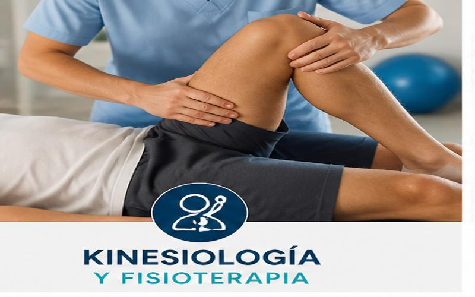
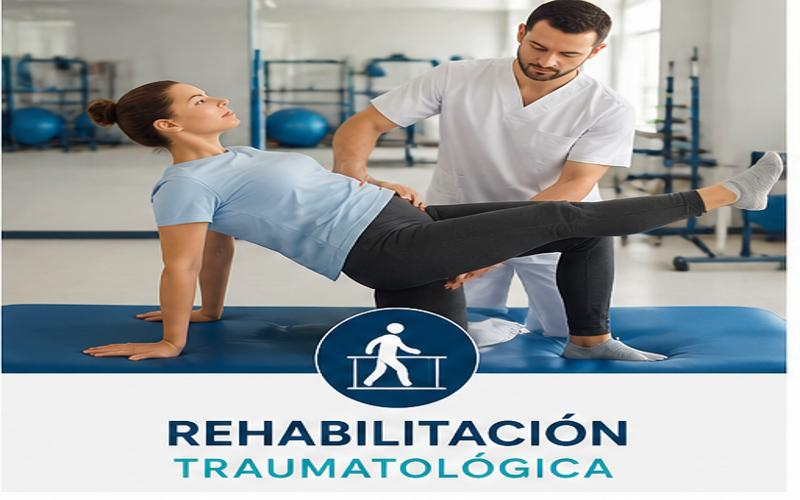
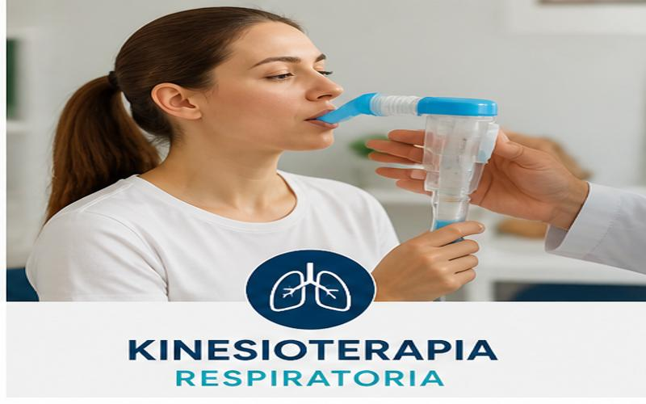
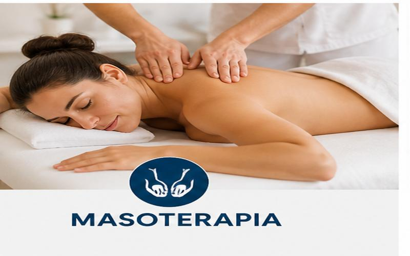
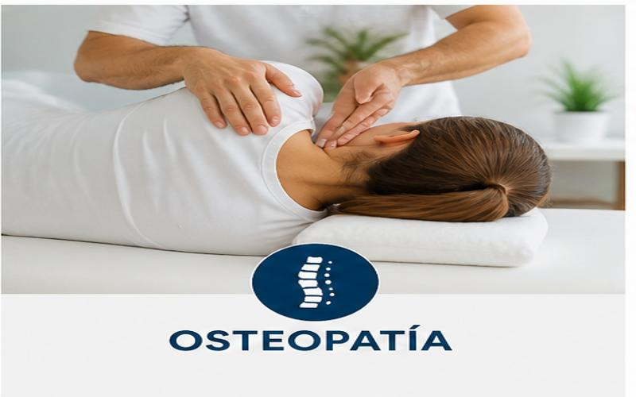
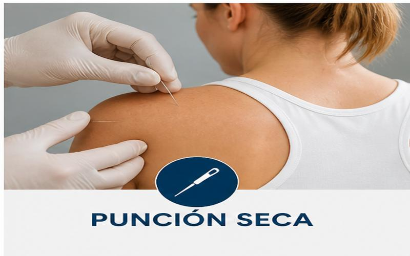

Kinesiología y Fisioterapia
Tratamientos personalizados para mejorar la movilidad, aliviar dolores y acompañar procesos de recuperación física.
En Kinesio.Saludd ofrecemos distintos tratamientos orientados a la recuperación, prevención y bienestar físico de cada paciente.

Tratamientos personalizados para mejorar la movilidad, aliviar dolores y acompañar procesos de recuperación física.

Rehabilitación de lesiones musculares, articulares y óseas, adaptada a las necesidades de cada paciente.

Tratamiento destinado a mejorar la función respiratoria mediante técnicas específicas de la kinesiología.

Masajes terapéuticos orientados a disminuir tensiones musculares, mejorar la circulación y favorecer la relajación.

Terapia manual enfocada en mejorar la movilidad corporal y aliviar molestias mediante técnicas específicas.

Técnica utilizada para el tratamiento de puntos gatillo musculares y dolores localizados.